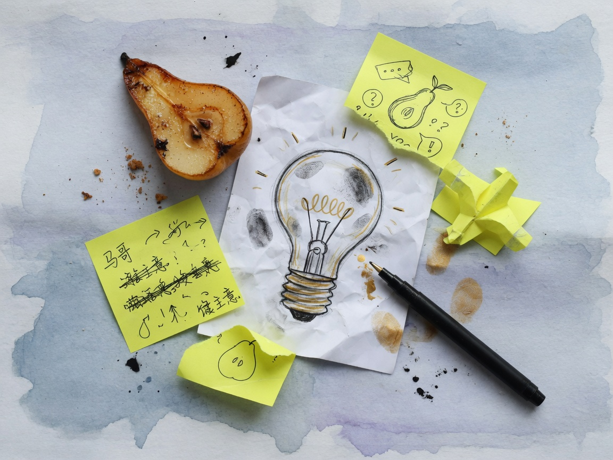

进行中
马哥的馊主意
聊天馊主意 → 可执行下一步


聊天馊主意 → 可执行下一步
炉上主菜 · 长期项目工作台

长任务交给外部 Worker
把碎片材料、笔记和对话收成可回看的工作台。
为研究与写作准备的笔记本。强调结构与引用。
连接人、项目与上下文。先服务团队，再慢慢打开。
拆局与下一步。
文章 → 知识图谱。
故事线交换试写。
未选之路，再回现实。
把长任务交给外部 Worker，避免主会话被拖死。
连接与转发，多端消息与回调对齐。
接入 Adeptify 能力的公共底座。
Cognia 试用反馈 · ForkLight 接入问答 · Build Log 回流
开放工作室夜 · 安装互助局 · 产品试用反馈周
团队视频 · 每日搞怪 · 花名小剧场